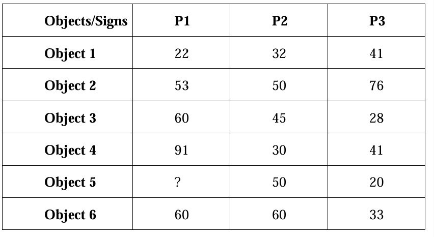
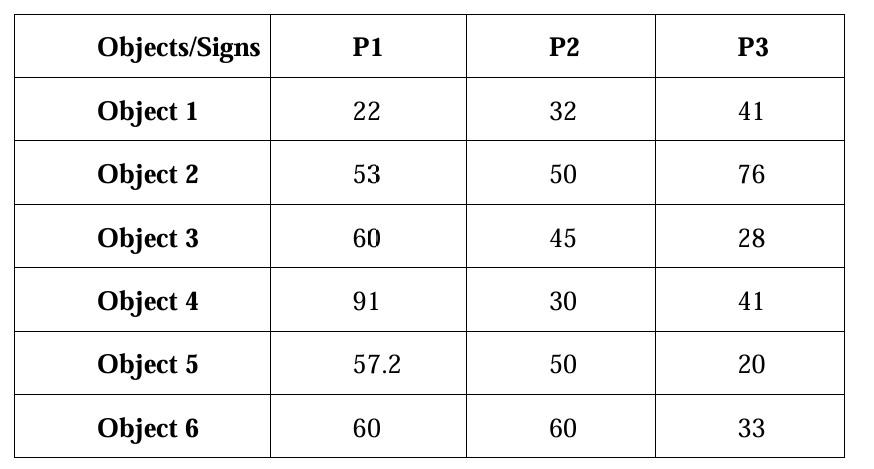
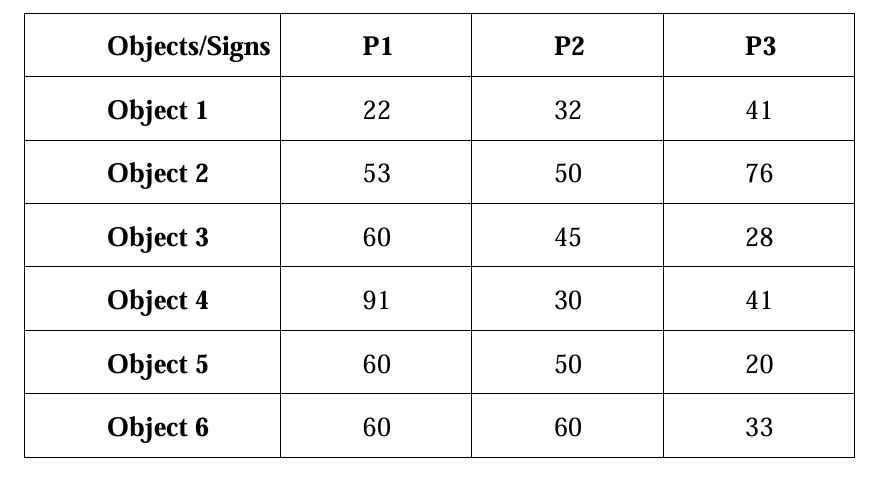
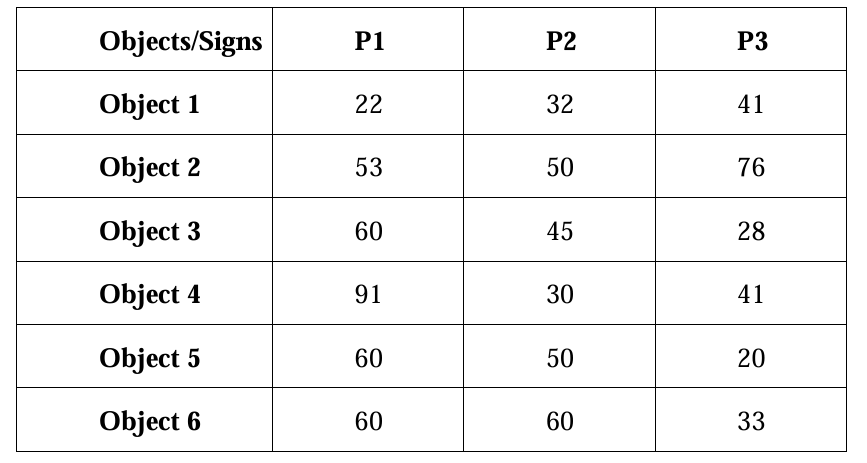
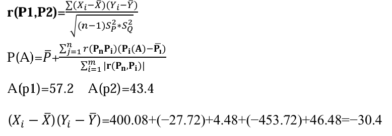
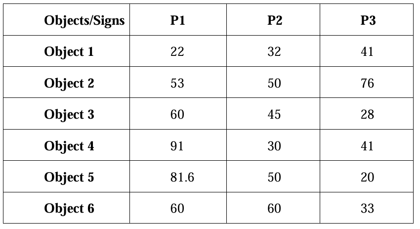
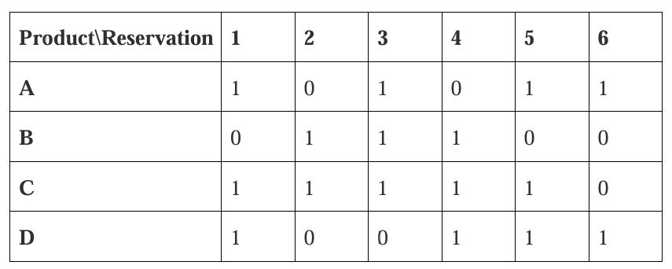

Practical Work Assignment 2
Problem Overview:
Based on the available information, use mean, median, mode, and smart formulas to determine the values of missing data.
Task Requirements:
Missing Data Imputation: Use different statistical methods to fill in missing data values based on the given partial data.
Methods Used:
- Mean (Average): Calculate the average of known data and use it to replace missing values.
- Median: Calculate the median of known data and use it to replace missing values.
- Mode: Calculate the mode of known data and use it to replace missing values.
- Smart Formula: Estimate missing values using formulas based on dataset characteristics or specific patterns.

Using the Average
P1 values: 22, 53, 60, 91, 60
Average: (22 + 53 + 60 + 91 + 60) / 5 = 286 / 5 = 57.2

P2 values:
Values: 32, 50, 45, 30, 60
Average = (32 + 50 + 45 + 30 + 60) / 5 = 217 / 5 = 43.4
P3 Values:
Values: 41, 76, 28, 41, 33
Average = (41 + 76 + 28 + 41 + 33) / 5 = 219 / 5 = 43.8
Using the Median
P1 values:
Values: 22, 53, 60, 91, 60
Sorted: 22, 53, 60, 60, 91
Median for P1: 60

Using the Mode
P1 values: 22, 53, 60, 91, 60
The Mode is 60 (appears twice).
 
Using a Smart Formula
(Sp1)² = (1239.04 + 17.64 + 7.84 + 1142.44 + 7.84) / 4 = 603.7
(Sp2)² = (129.96 + 43.56 + 2.56 + 179.56 + 275.56) / 4 = 157.8
r(p1, p2) = -30.4 / √(4 * 603.7 * 157.8) = -0.0492
A(p1) = 57.2, A(p3) = 43.8
(Xi - X̄)(Yi - Ȳ) = 1275.04 + 9.24 + 10.64 + 1107.04 + 5.04 = -205.8
(Sp1)² = (1239.04 + 17.64 + 7.84 + 1142.44 + 7.84) / 4 = 603.7
(Sp3)² = (7.84 + 1036.84 + 249.64 + 7.84 + 116.64) / 4 = 354.7
r(p1, p3) = -205.8 / √(4 * 603.7 * 354.7) = -0.111
P(5) = 57.2 + (1 / (-0.0492 - 0.111)) * (-0.0492 * (50 - 43.4) - 0.111 * (20 - 43.8)) = 81.6

Problem Overview:
The table contains order information for anonymous users in an online store. Rows represent product names, and columns represent order IDs. Each cell in the table contains a 1 if the product appears in the corresponding order, otherwise 0. When building a recommendation system, Euclidean distance is used to evaluate the similarity between products.
Task Requirements:
Calculate the Euclidean distance between Product A and other products. Based on these distances, evaluate which products can be recommended when purchasing Product A.
Methods Used:
- Euclidean Distance: Calculate the difference between two products across all orders using the Euclidean formula to determine similarity.
- Similarity Evaluation: Based on Euclidean distance results, select the most similar products to Product A for recommendation.

Distance(A, B) = √((1 - 0)² + (0 - 1)² + (1 - 1)² + (0 - 1)² + (1 - 0)² + (1 - 0)²)
Distance(A, B) = √5 = 2.236
Distance(A, C) = √((1 - 1)² + (0 - 1)² + (1 - 1)² + (0 - 1)² + (1 - 1)² + (1 - 0)²)
Distance(A, C) = √3 = 1.732
Distance(A, D) = √((1 - 1)² + (0 - 0)² + (1 - 0)² + (0 - 1)² + (1 - 1)² + (1 - 1)²)
Distance(A, D) = √2 = 1.414
Distance(A, D) > Distance(A, C) > Distance(A, B)
Product D is the Best for A